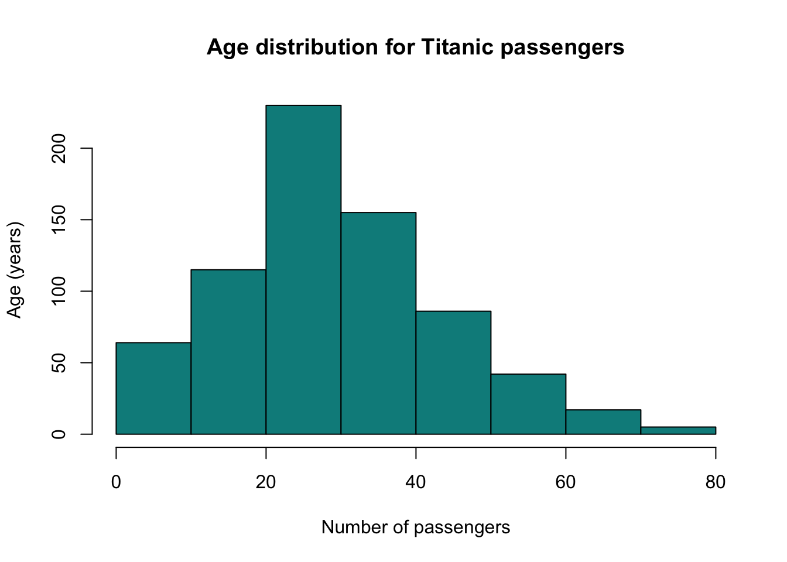
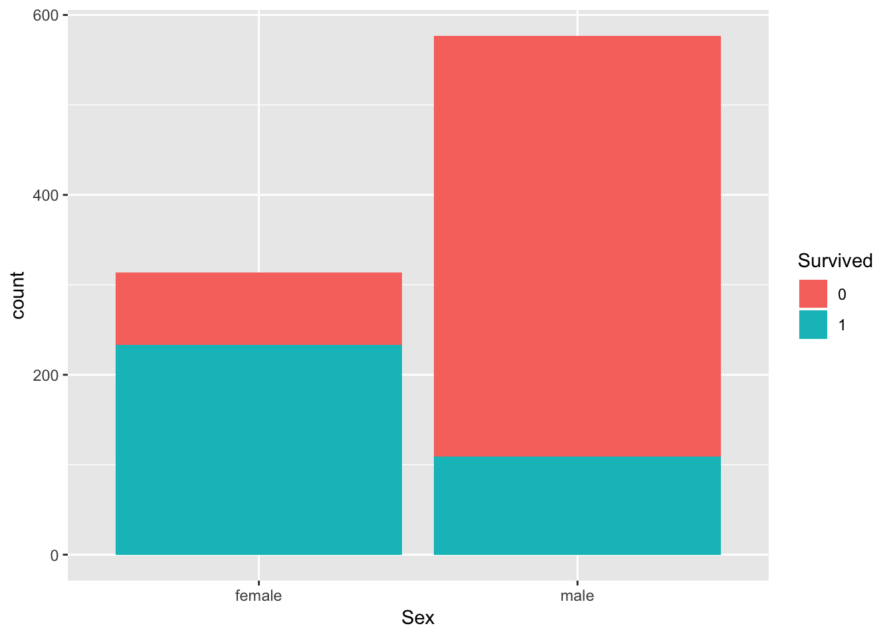
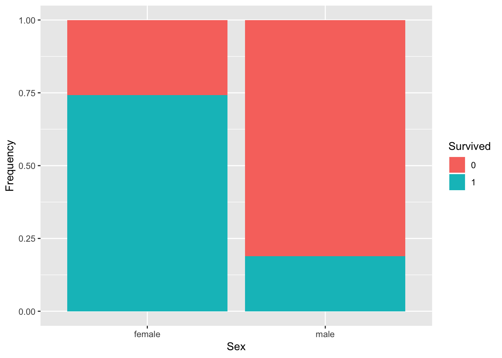
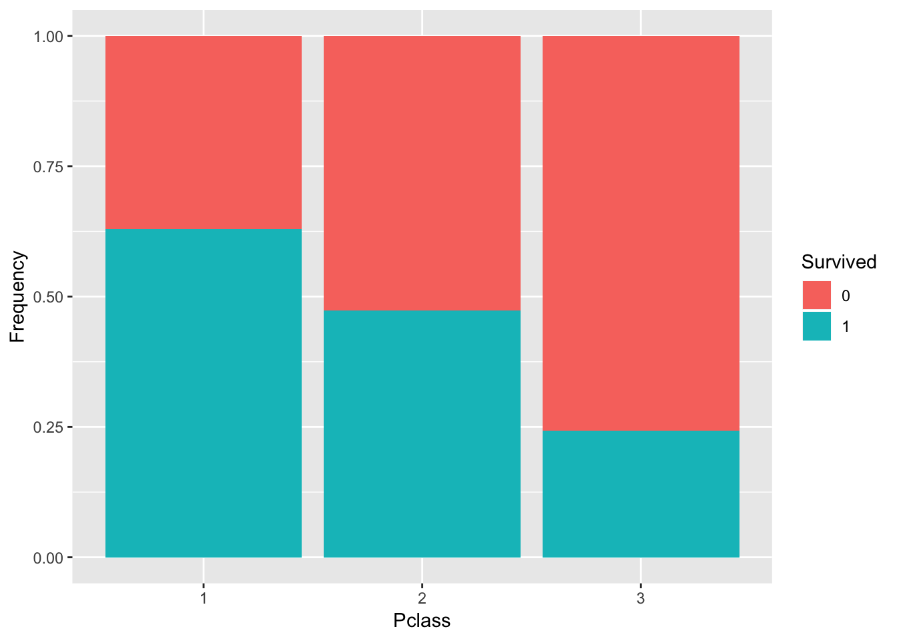
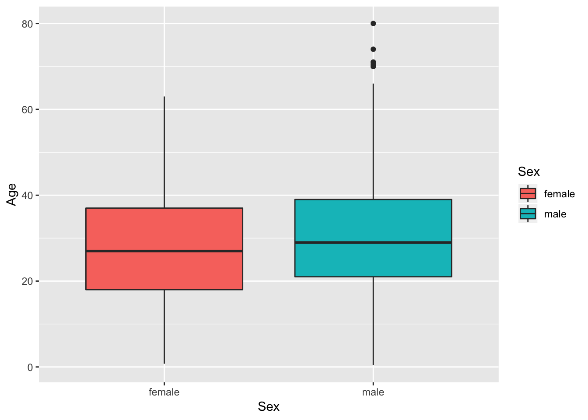
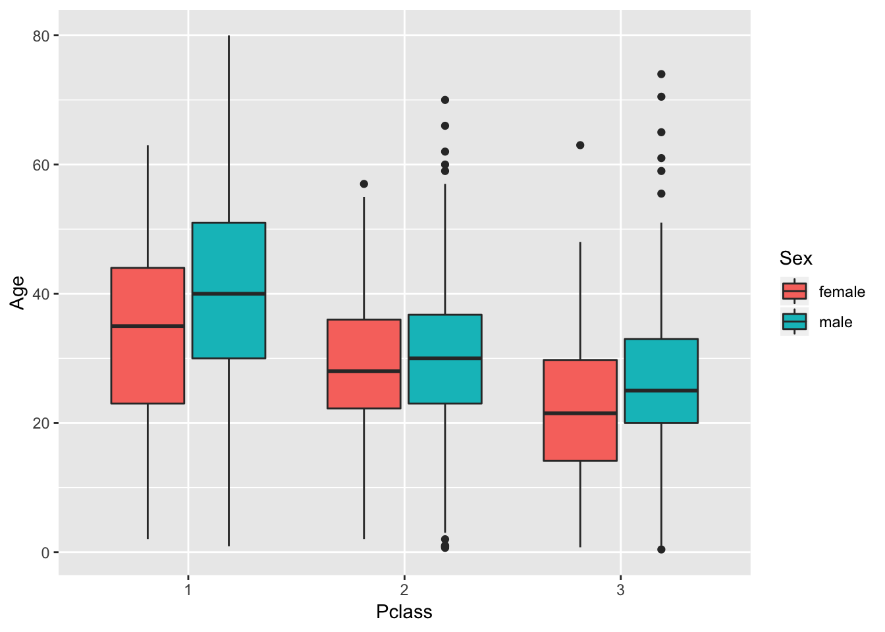
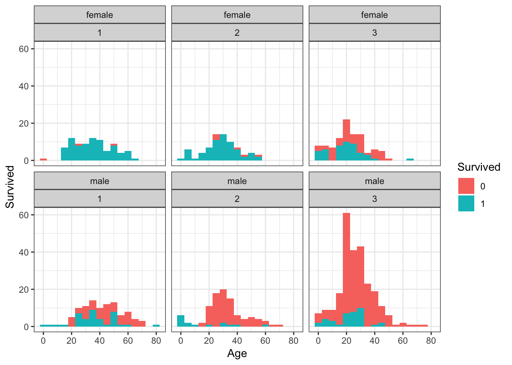

When doing data analysis we need to get to know our data. What are the variables? What type of values do they have? And most importantly: What kind of questions can we ask?
In this section we will learn how to explore a dataset. We will use the Titanic dataset that can be easily installed in R.
While exploring the dataset, we will also learn some useful function to explore, organize and visualize data.
#for fancy plots
library(ggplot2)
#install.packages("titanic")
library(titanic)
#For data frame manipulation
library(dplyr)
titanic<-titanic_train
head(titanic)## PassengerId Survived Pclass
## 1 1 0 3
## 2 2 1 1
## 3 3 1 3
## 4 4 1 1
## 5 5 0 3
## 6 6 0 3
## Name Sex Age SibSp
## 1 Braund, Mr. Owen Harris male 22 1
## 2 Cumings, Mrs. John Bradley (Florence Briggs Thayer) female 38 1
## 3 Heikkinen, Miss. Laina female 26 0
## 4 Futrelle, Mrs. Jacques Heath (Lily May Peel) female 35 1
## 5 Allen, Mr. William Henry male 35 0
## 6 Moran, Mr. James male NA 0
## Parch Ticket Fare Cabin Embarked
## 1 0 A/5 21171 7.2500 S
## 2 0 PC 17599 71.2833 C85 C
## 3 0 STON/O2. 3101282 7.9250 S
## 4 0 113803 53.1000 C123 S
## 5 0 373450 8.0500 S
## 6 0 330877 8.4583 QExplore the values for some variables:
One of the most informative ways to explore a data set is by looking at the distribution of values for a given variable. A distribution tells us how the observed values of the variable are spread across the range of possible values.

We can use the command table() to explore get frequencies of each value in the data. Let’s try for gender:
##
## female male
## 314 577##
## 1 2 3
## 216 184 491##
## 0 1
## 549 342Some variables such as Survived and Sex have only two values, that can be numbers or words. In R we should specify them as factors which is a type of variable that R can understand and compare even words and numbers.
We are going to use a for loop to convert 4 variables into factors.
First, we create the array cols with the names of the variables. The foor loop will iterate through them and use the as.factor() function to convert the column in the dataframe. Note how we use titanic[,i] to select that particular column.
Great, now we are ready to explore some relations between variables. Let’s start with Gender and Survival. Do women survided more than man?
The ggplot function from the ggplot2 library allows us to create complex plots, this is just a simple example. For more information check out the documentation.

So, it seems that most men died … and most women survived. But is not fair to compare directly because there were more men in the Titanic. We can compare relative numbers using the position="fill" option.

Now things are more evident. Right? Let’s check out survival rate vs ticket class. Do rich people survive more than poor people?

As expected (?), passengers from the first class had the highest chance to survive. Try to play around with other variables, by changing the aes arguments x and fill
Now, we want to know if there is a difference in age between men and women. We could do it in a similar way as above but the variable Age takes many different values, from babies to old men. We need a different type of plot. A boxplot, displays the distribution of values in a very convenient way. We can group it by gender using x=Sex and we want to plot the variable Age so we set y=Age the fill=Sex is to color it by gender.
## Warning: Removed 177 rows containing non-finite values (stat_boxplot).
We can check 3 variables at the same time: Class, Sex and Age
## Warning: Removed 177 rows containing non-finite values (stat_boxplot).
We see that older people, both male and female, occupied the first class while younger people took the third class. Also, we see a general trend that men were older than women independently of the class.
Exercise: Can you explain what this command is doing? How do you interpret the plots?
ggplot(titanic,aes(x=Age,fill=Survived)) +
theme_bw() + facet_wrap(Sex~Pclass)+geom_histogram(binwidth=5) +
labs(y="Survived",x="Age")## Warning: Removed 177 rows containing non-finite values (stat_bin).
Finally, we can also explore the data by sorting and filtering. The dplyr package allows us to do this and other useful operations to the data. This is just a quick introduction, for more advance usage see https://datascienceplus.com/getting-started-with-dplyr-in-r-using-titanic-dataset/
The operator %>% is very useful to create pipelines of commands.
Let’s filter the passengers that were men then arrange them by age, from oldest to yougest, with desc. Finally, we select only the age and name of the passengers. The last command head(10) is just for showing the first few data rows instead of the whole data.frame. With the argument =10, we print only 10 passengers.
#look at it
titanic %>% filter(Sex=="male") %>% arrange(desc(Age)) %>% select(Age,Name) %>% head(10)## Age Name
## 1 80.0 Barkworth, Mr. Algernon Henry Wilson
## 2 74.0 Svensson, Mr. Johan
## 3 71.0 Goldschmidt, Mr. George B
## 4 71.0 Artagaveytia, Mr. Ramon
## 5 70.5 Connors, Mr. Patrick
## 6 70.0 Mitchell, Mr. Henry Michael
## 7 70.0 Crosby, Capt. Edward Gifford
## 8 66.0 Wheadon, Mr. Edward H
## 9 65.0 Ostby, Mr. Engelhart Cornelius
## 10 65.0 Duane, Mr. Frank#looks good? Save it in a new data.frame
age_name_sorted <- titanic %>% filter(Sex=="male") %>%
arrange(desc(Age)) %>% select(Age,Name) Now, let’s group the data with group_by and use the summarise function to calculate the average age of men and women.
#we need to set na.rm = T to remove the NA values!
titanic %>% group_by(Sex) %>% summarise(average_age = mean(Age,na.rm=T))## # A tibble: 2 x 2
## Sex average_age
## <fct> <dbl>
## 1 female 27.9
## 2 male 30.7Now let’s double group by Sex and Survive
#we need to set na.rm = T to remove the NA values!
titanic %>% group_by(Sex,Survived) %>% summarise(average_age = mean(Age,na.rm=T))## # A tibble: 4 x 3
## # Groups: Sex [2]
## Sex Survived average_age
## <fct> <fct> <dbl>
## 1 female 0 25.0
## 2 female 1 28.8
## 3 male 0 31.6
## 4 male 1 27.3Finally, can you understand what this pipeline is doing?
titanic %>% mutate(Age_Bracket = ifelse(Age < 18, 'Minor','Major')) %>%
group_by(Survived,Age_Bracket) %>%
summarise(pnt = n())## # A tibble: 6 x 3
## # Groups: Survived [2]
## Survived Age_Bracket pnt
## <fct> <chr> <int>
## 1 0 <NA> 125
## 2 0 Major 372
## 3 0 Minor 52
## 4 1 <NA> 52
## 5 1 Major 229
## 6 1 Minor 61For more information and examples of how to use ggplot2 and dplyr please see the following references: